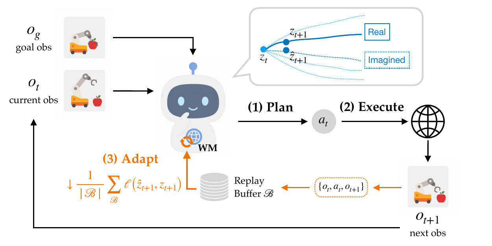
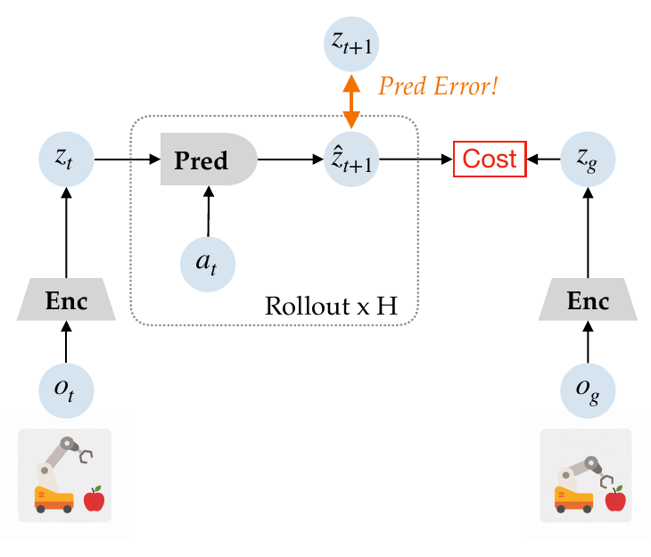
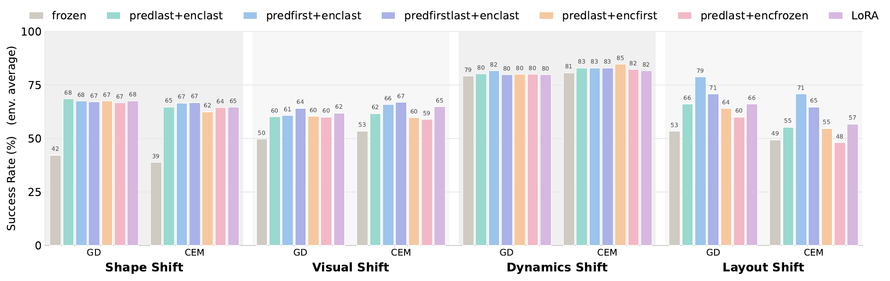
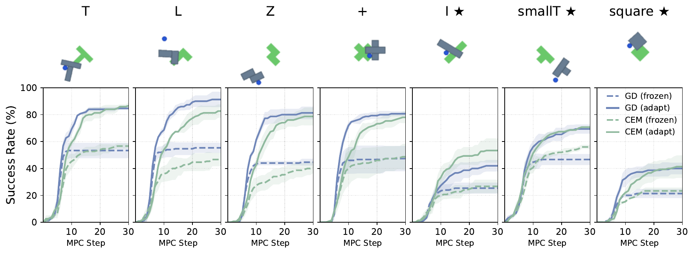
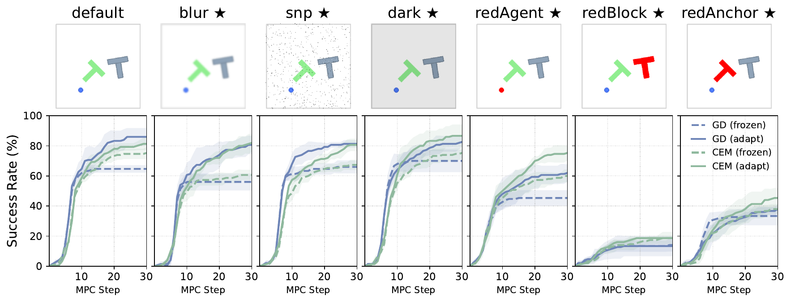
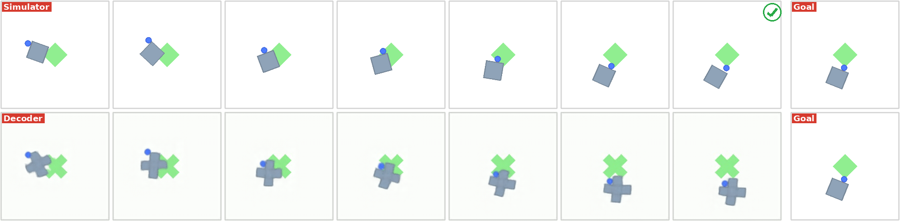
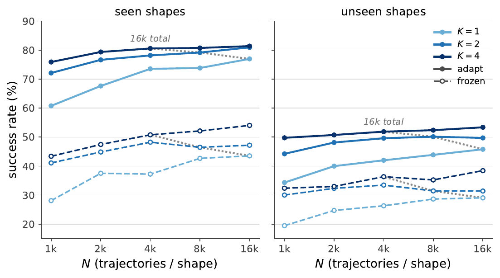

An interactive explainer
AdaJEPA: An Adaptive Latent World Model
Every JEPA world model in this family — LeCun's original proposal, LeWorldModel, SkyJEPA — shares one quiet assumption: once training ends, the model is done. Frozen. Whatever it learned about the world is whatever it will ever know, and if the real world drifts away from its training distribution mid-deployment, it has no way to notice. AdaJEPA removes that assumption with something almost too simple to be the whole story: after every single action the robot takes, do one gradient step on the transition that just happened, using the exact same self-supervised loss the model was pretrained with. On unseen object shapes, that one extra step very nearly doubles the success rate — and on a constrained data budget, a model adapted on 1,000 trajectories beats a frozen model trained on 16× more data.


Model-predictive control with a learned world model is normally a one-way pipeline: pretrain a model offline, freeze it, then use it to plan forever. That pipeline has a structural blind spot. The model was trained on some distribution of shapes, layouts, lighting, or dynamics — and the exact reason you're deploying a world model instead of a hand-coded physics engine is that you can't enumerate every situation it will encounter in advance. When reality drifts from training, a frozen model doesn't fail loudly; its predictions just get quietly less accurate, degrading whatever plan is built on top of them.
AdaJEPA's answer isn't a bigger model, more training data, or a separate fine-tuning phase — it's cheaper than all three: keep training, forever, one real transition and one gradient step at a time, threaded through the exact loop the robot is already running.
1. Why frozen world models fail quietly
AdaJEPA's related-work section names the entire family this fixes: LeCun's 2022 proposal, V-JEPA2, DINO-WM, Wang et al.'s temporal-straightening world models, LeWorldModel, and hierarchical-planning variants — every one of them, the paper notes, is "kept frozen at test time, leading to potential performance degradation under test-time distribution shift." The nearest prior attempt (Parthasarathy et al., 2025) tries to close the train-test gap by synthesizing more diverse data during training — but the resulting model is still frozen once deployed, and still only evaluated in-distribution. AdaJEPA claims to be the first to adapt a JEPA world model during planning itself.
The failure mode is visible directly in the paper's own success-rate curves: on shapes the model never saw during training, a frozen model's performance climbs for a few replanning steps, then flatlines early — it simply runs out of useful signal, because everything it knows is already baked in. The widget below plots this shape, endpoints taken from the paper's own reported numbers, next to what happens when the model keeps learning.
2. The trick: one gradient step, in the replanning loop
The base system is an ordinary JEPA world model: a sensory encoder, an action encoder, and a predictor, $\vz_t = \mathcal{E}^s_\phi(\vo_t)$, $\vu_t = \mathcal{E}^a_\psi(\va_t)$, $\hat\vz_{t+1} = f_\theta(\vz_t,\vu_t)$ — trained from scratch per environment following a temporal-straightening recipe (a ResNet encoder, transformer predictor, stop-gradient target branch), the same broad family as LeWorldModel and SkyJEPA but not literally either of them.
The adaptation loss is the giveaway that this isn't a new architecture at all — it's the training loss, redeployed:
$$ \gL_{\rm ada}(\gB) = \frac{1}{|\gB|}\sum_{i}\, \ell\big(f_\theta(\vz_i,\vu_i),\ \mathrm{sg}(\vz_{i+1})\big) $$
applied not to an offline dataset but to $\gB$, a small rolling buffer of the real transitions the robot has actually observed so far this episode. Algorithm 1's loop is exactly the five stages in the diagram above: plan a 25-step action sequence against the current model (gradient descent or CEM, both supported and compared), execute only the first action chunk (5 low-level actions), append the resulting real transition to the buffer, take exactly one gradient step on $\gL_{\rm ada}$, and replan. The paper is explicit that one step is the default and recommended setting — ablations with 2 or 5 steps exist but don't reliably beat it.
Two agents chasing the same goal under the same systematic model mismatch. The frozen model's bias never corrects and it misses; AdaJEPA's one-gradient-step-per-replan shrinks the bias away and it reaches the goal.
3. Which parameters, and how much it costs
Adapting every parameter of the network on a single noisy transition would be a recipe for instability, so by default only a small subset updates: the visual encoder's last stage and the predictor's last transformer block (including its final LayerNorm) — labeled "predlast+enclast" in the paper's own ablation. Six variants are compared, plus a LoRA-adapter alternative (rank 8, all linear layers). All of them beat the frozen baseline; the paper's honest finding is that which subset matters far less than the decision to adapt at all — though adapting the predictor's first block specifically helps under layout/maze shifts, because it sits closer to the raw action and latent inputs and can recalibrate local transition structure faster.

The reason this is viable inside a real-time control loop at all: updating a small parameter subset for a single step is nearly free. On one H200 GPU, adaptation adds only 0.01–0.03 seconds per MPC replanning step on top of base planning time (for context, plain gradient-descent planning alone takes roughly 3 seconds per step; CEM roughly a quarter of a second) — the paper calls this overhead "almost negligible." It often pays for itself anyway: an adapting model frequently needs fewer total replans to reach the goal, so net episode time can be lower despite the added per-step cost.
Two further knobs matter more than which layers you pick. Learning rate and step count trade off: a large learning rate (5× the pretraining rate) works well with exactly one adaptation step but destabilizes training if you push it to two or five steps, while a small rate (0.2×) is stable at any step count but needs more steps to catch up — and more steps means more per-replan latency. The replay buffer matters less than you'd guess: comparing no buffer, a 5-transition sliding window, a 5-transition "hard example" window, and an unbounded buffer, the swings are modest next to the LR/step-count effect, and a plain recent-N window is judged the most stable choice and used as the default — there's no elaborate prioritized-replay scheme hiding here, just the last handful of real transitions.
4. Results
Three test environments: PushT (push a T-block to a target pose), PushObj (PushT generalized to seven shapes — trained on four, tested on three held-out shapes plus visual perturbations), and PointMaze (2D navigation, tested under shifted dynamics and unseen maze layouts).


On unseen shapes, AdaJEPA very nearly doubles success rate — for the held-out square shape under gradient-descent planning, frozen success sits near 20%, adaptation lifts it to roughly 40%. Under shifted PointMaze dynamics (higher joint damping), one adaptation variant improves success by as much as 25 percentage points. On the default, in-distribution dynamics, where the frozen model is already strong, adaptation does no harm — it doesn't need distribution shift to be safe to leave on.

The visual-shift results have a specific, honest asymmetry worth dwelling on rather than averaging away: blur, sensor noise, and darkening all see clean, substantial gains from adaptation, but recoloring the agent, the block, or the anchor point sees only modest gains. The paper's own diagnosis is that the frozen model partly relies on color as a shortcut to distinguish the pusher from the object it's pushing — when color is exactly the thing perturbed, one gradient step per replan isn't always enough to unlearn a shortcut the model leaned on throughout pretraining. Adaptation fixes a shifted distribution quickly; it's slower to fix a shortcut the model was actively relying on.
The data-efficiency result is the sharpest number in the paper. In the low-data regime — a single shape, only 1,000 training trajectories — the frozen model reaches 28.1% success; AdaJEPA lifts the same pretrained checkpoint to 60.8%, more than doubling it. More strikingly, that adapted 1,000-trajectory model beats a frozen model trained on 16,000 trajectories of the same shape (43.5%) — one gradient step per replan, at test time, outperforming sixteen times the offline data.

5. Why this works
Three ideas do the real work here, and none of them is exotic. First, the adaptation signal is free — it's the transition the robot was going to observe anyway by acting in the world, not extra labeled data someone has to collect. Second, the loss is already the right one: because it's the identical self-supervised prediction loss used in pretraining, there's no new objective to design or balance against the old one, and no risk of catastrophic forgetting from optimizing toward some unrelated downstream signal. Third, test-time distribution shift is exactly the setting where a single gradient step is most valuable — you don't need to relearn the whole task, you need to correct a specific, local mismatch (a shape the encoder never saw, a shifted friction coefficient), and one step of local recalibration is often enough to do that without destabilizing everything else the model already knows.
6. What it means
Put next to LeWorldModel and SkyJEPA, AdaJEPA is answering a different question about the same family of models. Those two ask "how do you build a good frozen world model in the first place" — this one asks "what do you do the moment that frozen model meets a situation it wasn't built for." Neither question makes the other obsolete: SkyJEPA's physics-inspired prober and AdaJEPA's test-time adaptation are not competing solutions to the same problem, they're two different, stackable answers to two different failure modes (systematic model-structure error vs. genuine distribution shift) — a genuinely well-built world model still benefits from being allowed to keep learning after it ships.
Open problems
- Does the replay buffer strategy matter more at longer horizons? The paper's own ablation shows buffer choice has a smaller effect than learning rate/step-count, but only tests a handful of strategies (none, recent-5, hard-5, infinite) over relatively short episodes.
- How far can "one gradient step" scale? A single step works because the mismatch it's correcting is small and local; it's an open question whether a bigger distribution shift needs more steps, a bigger buffer, or a fundamentally different adaptation rule.
- Combine with a physics-structured prober? SkyJEPA's lesson — impose known structure, learn only the residual — and AdaJEPA's lesson — keep updating that residual online — look directly composable, and neither paper tries the combination.
The bottom line
The frozen-model assumption running through this entire family of papers was never a law of nature — it was a simplification nobody had gotten around to removing. AdaJEPA removes it with the cheapest possible fix: a single gradient step, on data the robot was already collecting, inside a loop it was already running. The result isn't a smarter model. It's a model that's allowed to notice when it's wrong.